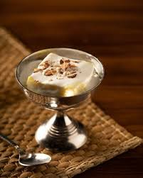

Ingredients
- 1 cup dried apricots
- 1/2 cup sugar
- 1 cup milk
- 1/2 cup heavy cream
- 1/4 teaspoon cardamom powder
- 1 tablespoon chopped almonds & pistachios
Instructions
- Soak dried apricots in warm water for 2 hours.
- Blend them into a smooth paste.
- In a pan, heat milk and add the apricot paste, sugar, and cardamom powder.
- Cook until the mixture thickens.
- Let it cool, then fold in the cream.
- Refrigerate for 2 hours, garnish with nuts, and serve chilled.